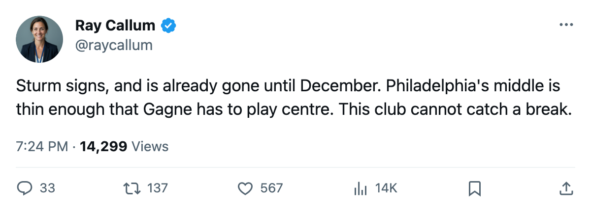
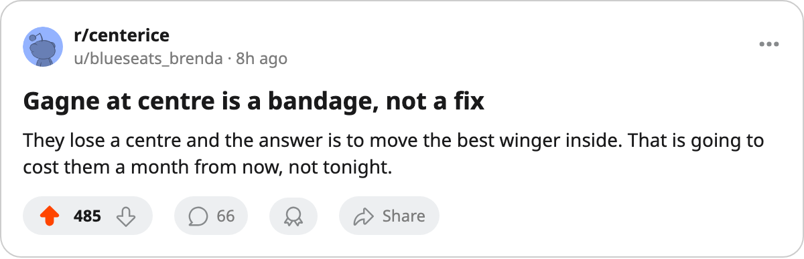

Injury Report: Philadelphia Lose Sturm (Leg); Return Targeted for December 30
The Flyers are without Marco Sturm until the end of the year, and Simon Gagne moves off the wing into the middle.
 Ray CallumSenior correspondent · Home Ice Network
Ray CallumSenior correspondent · Home Ice NetworkPhiladelphia lost  Marco Sturm85 to a leg injury sometime between 2005-10-16 and 2005-10-18. The club has targeted 2005-12-30 for his return, the latest date on the league's injured list.
Marco Sturm85 to a leg injury sometime between 2005-10-16 and 2005-10-18. The club has targeted 2005-12-30 for his return, the latest date on the league's injured list.
The  Philadelphia Flyers Flyers signed Sturm on 2005-10-13 for $452,230, and the Bureau's Book has him at 85. He had dressed for each of the club's first three games. Philadelphia carry 4 spells on the season's ledger, more than any other club, and the ledger puts their days lost at 73.
Philadelphia Flyers Flyers signed Sturm on 2005-10-13 for $452,230, and the Bureau's Book has him at 85. He had dressed for each of the club's first three games. Philadelphia carry 4 spells on the season's ledger, more than any other club, and the ledger puts their days lost at 73.
Leg injuries have been the expensive kind this season. The league has designated 3, and they average 59 days, longer than any other body part it has named.
| player | club | return |
|---|---|---|
 Branislav Mezei73 Branislav Mezei73 |  Florida Panthers Florida Panthers | 2005-11-13 |
 Yannick Tremblay72 Yannick Tremblay72 |  Atlanta Thrashers Atlanta Thrashers | 2005-12-28 |
| Marco Sturm | Philadelphia Flyers | 2005-12-30 |
The club's ledger already lists  Simon Gagne84 and
Simon Gagne84 and  Robert Esche76 among its 4 spells, and Gagne is now the one asked to cover.
Robert Esche76 among its 4 spells, and Gagne is now the one asked to cover.
The slot sheet moves Gagne from left wing into Sturm's place in the middle.  Stephane Matteau71, who was not dressed before, takes a spot on the left side, and
Stephane Matteau71, who was not dressed before, takes a spot on the left side, and  Per-Johan Axelsson77 and
Per-Johan Axelsson77 and  Keith Primeau80 pick up new slots on the same sheet.
Keith Primeau80 pick up new slots on the same sheet.
Esche has played all 3 games in goal. Philadelphia are 2-1-0 for 4 points and won 3-1 in Montreal on 2005-10-15 with 21 shots.
They host  Washington Capitals on 2005-10-19. Washington have lost twice in overtime and carry 2 points.
Washington Capitals on 2005-10-19. Washington have lost twice in overtime and carry 2 points.
The Flyers play at Buffalo on 2005-10-22 and host Montreal on 2005-10-24. Sturm returns 2005-12-30.

